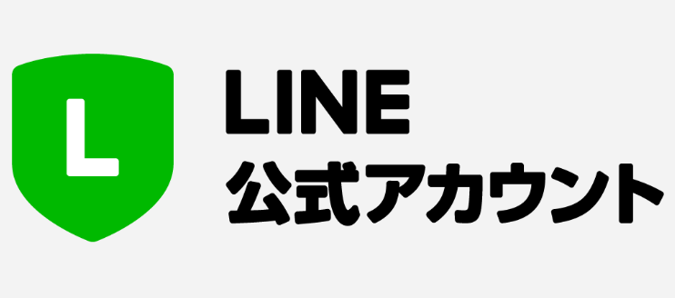

運営側の伝達負担を減らし、保護者へ正確に情報を届けるために
生徒数：60名 ／ 保護者数：120名想定
運営側 ➔ 役員 ➔ 学年長 ➔ 保護者と連絡をコピー・転送する手間や、遅延のリスクが起きていませんか？
学年やチームごとにグループが分かれているため、送り先ミスや連絡漏れの不安はありませんか？
日常トークの中に重要な案内が混ざり、過去のスケジュールや持ち物を探すのに苦労していませんか？
関係のない学年のやり取りまで通知されることで、大切な連絡を見落とす原因になっていませんか？
年度ごとに新しくLINEグループを作り、全員を招待し直す作業に時間を取られていませんか？
期途中の入退会がある度に、グループへの招待や退会忘れの確認に手間がかかっていませんか？
連絡ルールや過去のやり取りが共有しづらく、新しい担当者へ引き継ぐ際に負担になっていませんか？
これら「管理の大変さ」が、役員を引き受ける際の心理的ハードルを上げる要因になっていませんか？
「送る側も、受け取る側も、楽チンな仕組み」へ

他人に通知されずに運営側と保護者が個別返信可能です。
夜間や仕事中は自動返信で対応し、運営のプライベートを守ります。
「雨」「持ち物」等へ自動返信するよう事前設定が可能です。
体験参加者もタグ管理可能。きめ細かなフォローが可能です。
年間運用コスト
（ライトプラン 5,500円/月 × 12ヶ月 税込）
無料プランとの比較
・無料プラン制限：月200通まで
・クラブ必要配信数：120名 × 月30回 ＝ 3,600通/月
【プランA】 初回会費時に上乗せ
年度最初の集金時に1,500円加算します。
【プランB】 現在の会費（余剰）から捻出
予備費等から充当。保護者への新たな追加集金はありません。
登録時、LINEのニックネームしか分からず誰が誰だか判断できないのでは？
「登録直後の自動アンケート」で名前を回答してもらい、運営側で手動タグ付けを行えば解決します
公式アカウントは1対1のやり取りが基本なため、保護者同士の「横のやり取り（車出し相談など）」ができなくなるのでは？
基本的に個人間のやり取りにお任せします。もし必要と判断される場合には「LINEオープンチャット」の併用を検討します
IT操作に苦手意識が強い方が管理者となった場合でも、専用の管理画面を扱えるか不安
実務に必要なボタン操作のみを厳選した「簡単手順書」を用意。交代時も招待URLを送るだけでスムーズに完了します
本当に有料プランが必要？セグメント配信などで無料枠（月200通）に抑えられないか
特定の学年に送るだけでも月に数回で超過が想定されることに加え、常に配信数を気にする心理的負担を考慮すると、有料プランが推奨されます
公式アカウントを作成。複数人で送信・対応できる体制を整えます。権限レベルの割当て（役員の方を最高権限の「管理者」、学年長の方を「運用担当者」権限とする等）も行います。
QRコードを配布。登録時に学年アンケートに回答してもらい自動でタグを付与します。もちろん、管理者側でタグ付けも可能です。
配信時間（朝9時〜夜20時）や権限（誰が何を配信するか）、夜間の自動応答の整備に加え、保護者側のリアクションルール（スタンプ返信の禁止）など、運営と保護者双方の負担を軽減するルールを事前に策定します。
運営側の管理コストを最小限に抑え、子どもたちがのびのびとサッカーを楽しめる環境を無理なく支えましょう。
ご質問やテスト運用の進め方について、ご相談をお待ちしております。